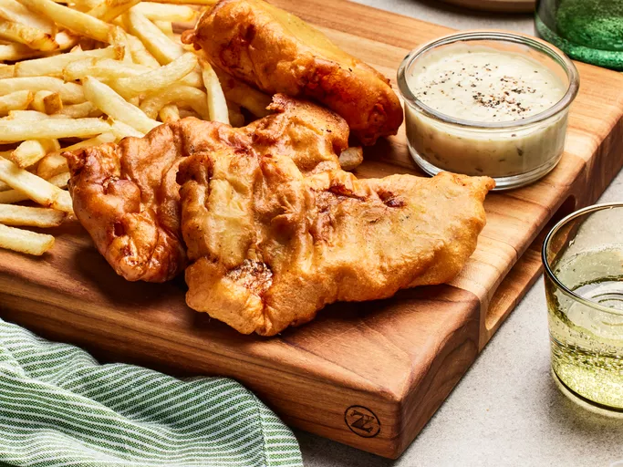

Fish and Chips

Description
Fish and chips is a traditional British dish consisting of fried fish and thinly sliced fried potatoes.
Often considered Britain's national dish, fish and chips is a common takeaway food in numerous other countries, particularly English-speaking and Commonwealth nations.
Ingredients
- 4 large potatoes, peeled and cut into stips
- 1 cup all-purpose flour
- 1 teaspoon baking powder
- 1 teaspoon salt
- 1 cup milk
- 1 egg
- 1 quart vegetable oil for frying
- 1 1/2 pounds cod fillets
Steps
- Gather all ingredients.
- Place sliced potatoesin a medium bowl and cover with cold water.
- Mix flour, baking powder, salt, and pepper together in a separate medium bowl.
- Add milk and egg; stir until batter is smooth. Let stand for 20 minutes.
- Meanwhile, heat oil in a large pot or electric skillet to 350°F (175°C).
- Drain and pat dry potatoes. Fry in hot oil until tender, about 5 minutes; drain on paper towels.
- Dredge cod in batter, one piece at a time, and place in hot oil.
-
Fry fish in vatches until golden brown on all sides; drain on paper towels.
Monitor oil temperature, increasing the heat as needed to maintain 350°F (175°C).
- Fry potatoes again in hot oil until crips, 1 to 2 minutes; drain on paper towls.
- Serve and enjoy.
Source: https://www.allrecipes.com/recipe/16580/classic-fish-and-chips/
Return to Homepage